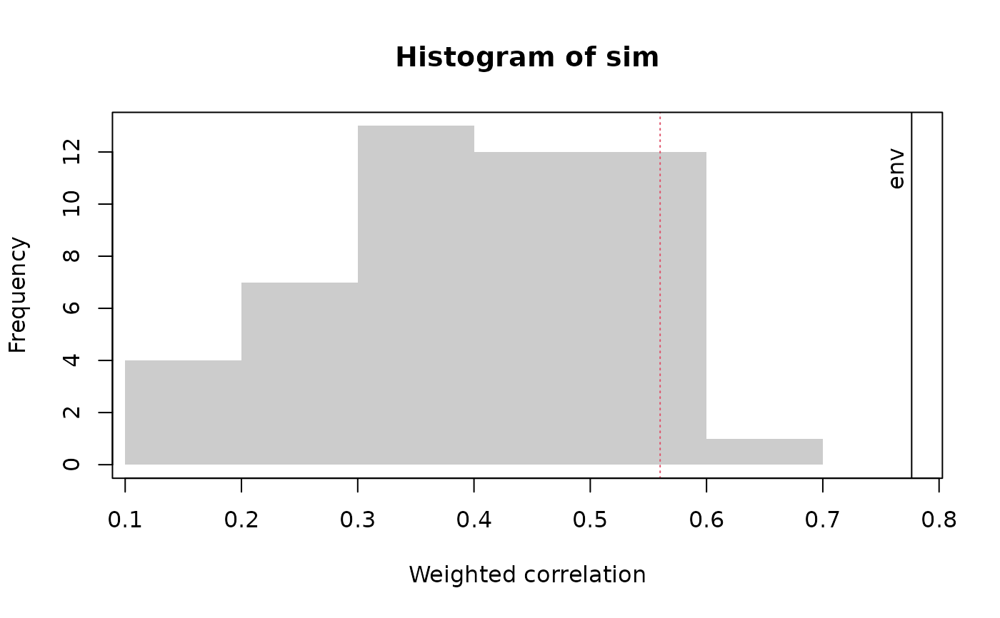
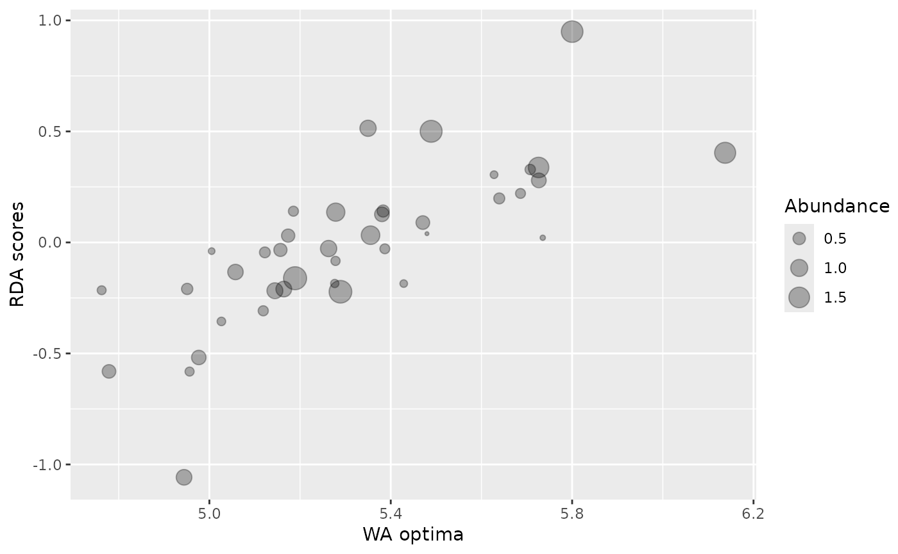
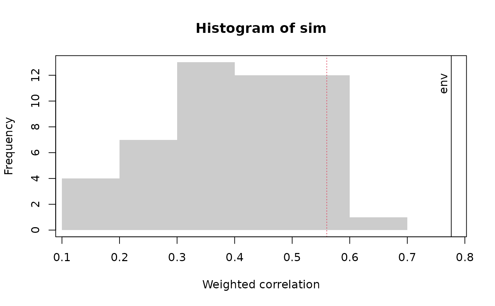
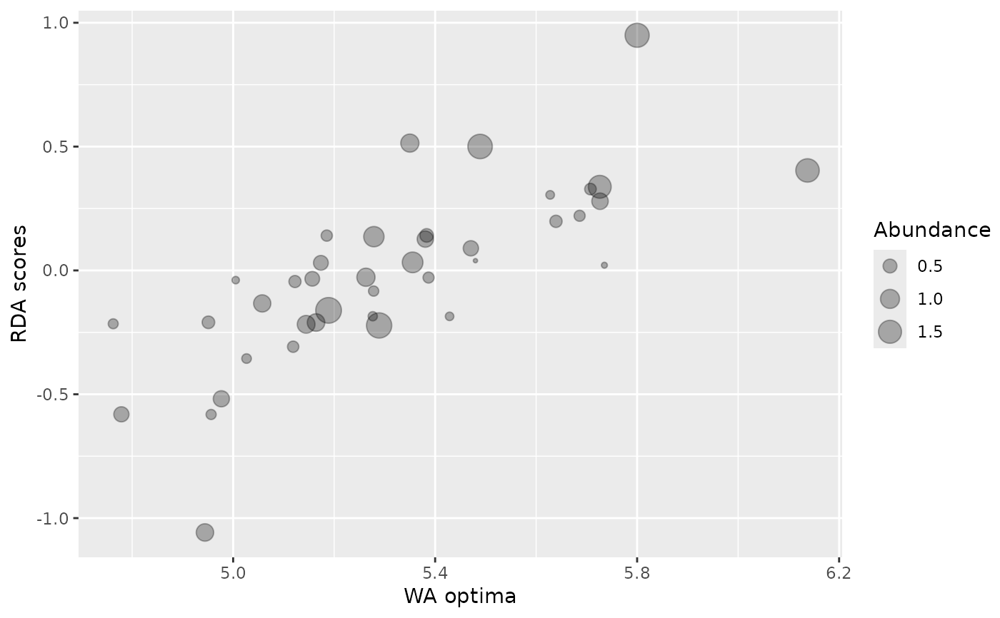

Weighted correlation between weighted averaging optima and constrained ordination species scores.
Source:R/obs.cor.R, R/plot.obscor.R
obs.cor.Rdobs.cor calculates the weighted correlation between the species weighted average optima and the axis one species scores of an ordination constrained by the WA reconstruction.
obs.cor(
spp,
env,
fos,
ord = rda,
n = 99,
min.occur = 1,
autosim,
permute = FALSE
)
# S3 method for obscor
plot(
x,
xlab,
ylab,
f = 5,
which = 1,
variable_names = "env",
abun = "abun.calib",
p_val = 0.05,
...
)
# S3 method for obscor
identify(x, labels, ...)
# S3 method for obscor
autoplot(
object,
which = 1,
variable_names = "env",
abun = "abun.calib",
p_val = 0.05,
nbins = 20,
top = 0.7,
...
)Arguments
- spp
Data frame of modern training set species data, transformed if required, for example with
sqrt- env
Vector of a single environmental variable
- fos
Data frame of fossil species data. Species codes and transformations should match those in spp.
- ord
Constrained ordination method to use.
rdais the default,ccashould also work.capscalewon't work without modifications to the code (or a wrapper).- n
number of random training sets. More is better.
- min.occur
Minimum number of occurrences of species in the species and fossil data.
- autosim
Optional data frame of random values. This is useful if the training set is spatially autocorrelated and the supplied data frame contains autocorrelated random variables. If
autosimis missing, andpermuteisFALSE, the transfer functions are trained on random variables drawn from a uniform distribution.- permute
logical value. Generate random environmental variables by permuting existing variable. Only possible if there is only one environmental variable and
autosimis missing.- x
An obscor object.
- xlab
X-axis label if the default is unsatisfactory.
- ylab
Y-axis label if the default is unsatisfactory.
- f
Scale factor for the abundances, the maximum cex of points for the which=1 plot.
- which
Which type of plot. which = 1 gives a plot of RDA scores against species optima. which = 2 gives a histogram showing the null distribution of correlations between RDA scores and species optima, together with the observed correlation.
- variable_names
Name of environmental variable (only 1 currently) for the label on the observed correlation with which = 2
- abun
Which species weighting required for plots. See details
- p_val
P value to draw a line vertical line at (with which=2)
- ...
Other arguments to plot or identify
- labels
Labels for the points in identify. By default, the species names from intersection of colnames(spp) and colnames(fos) are used.
- object
An obscor object.
- nbins
integer giving number of bins for the histogram
- top
Proportion of the figure below the environmental name labels.
Value
obs.cor returns an obscor object, which is a list
ob Observed correlation. Data.frame with columns Optima, RDA1 and abun containing the species optima, ordination axis 1 scores, and abundance used to weight the species respectively and a vector containing the weighted and unweighted correlations between species optima and ordination scores.
sim Matrix with the correlation between species weighted average optima and ordination scores in the first column and the weighted correlation in the second column. Each row represents a different random environmental variable.
sigs p-value for the observed correlation between species weighted average optima and ordination scores for each of the weights.
Details
Obs.cor calculates the (weighted) correlation between the species WA optima in the calibration set and their ordination axis one scores in the fossil data. Seven different weights for the species are implemented.
"abun.fos" - weight by the mean abundance in the fossil data.
"abun.calib" - weight by the mean abundance in the calibration data
"abun.joint" - weight by the product of the mean abundance in the fossil and calibration data
"n2.fos" - weight by the effective number of occurrences (Hill's N2) of each species in the fossil data
"n2.calib" - weight by the effective number of occurrences (Hill's N2) of each species in the calibration data
"n2.joint" - weight by the product of n2.calib and n2.fos
"unweighted" - all species receive same weight. This is unlikely to be the best option but is included for completeness.
It is unclear which of these weights is likely to be best: research is in progress. A square root transformation of the species data is often useful. n = 99 is too small in practice to give a smooth histogram of the null model. n = 999 is better.
Functions
plot(obscor): Plots for obscor objectidentify(obscor): Identify species on obs.cor plotautoplot(obscor): autoplot for obscor object
Note
The test of the weighted correlation between species optima and
ordination axis scores is more powerful, especially with a small number of
fossil observations, that the test of variance explained in
randomTF but is only applicable to WA and will have a large
type II error if there are few species.
References
Telford, R. J. and Birks, H. J. B. (2011) A novel method for assessing the statistical significance of quantitative reconstructions inferred from biotic assemblages. Quaternary Science Reviews 30: 1272--1278. doi:10.1016/j.quascirev.2011.03.002
Examples
require(rioja)
data(SWAP)
data(RLGH)
rlgh.obs <- obs.cor(
spp = sqrt(SWAP$spec),
env = SWAP$pH,
fos = sqrt(RLGH$spec),
n = 49 # low number for speed
)
rlgh.obs$sig
#> abun.fos abun.calib abun.joint n2.fos n2.calib n2.joint unweighted
#> 0.02 0.02 0.02 0.02 0.02 0.02 1.00
plot(rlgh.obs, which = 1)
 plot(rlgh.obs, which = 2)

require(ggplot2)
#> Loading required package: ggplot2
autoplot(rlgh.obs, which = 1)

autoplot(rlgh.obs, which = 2, variable_names = "pH")
plot(rlgh.obs, which = 2)

require(ggplot2)
#> Loading required package: ggplot2
autoplot(rlgh.obs, which = 1)

autoplot(rlgh.obs, which = 2, variable_names = "pH")